Book a visit, a phone call or a task
In the office app, press Help and type book a visit, a phone call or a task
: the tour plays on your own screen, with your own data.
-
 1
1New appointment
Opens the booking form. Visits, phone calls and tasks all start here (or from a customer, with their details filled in).
-
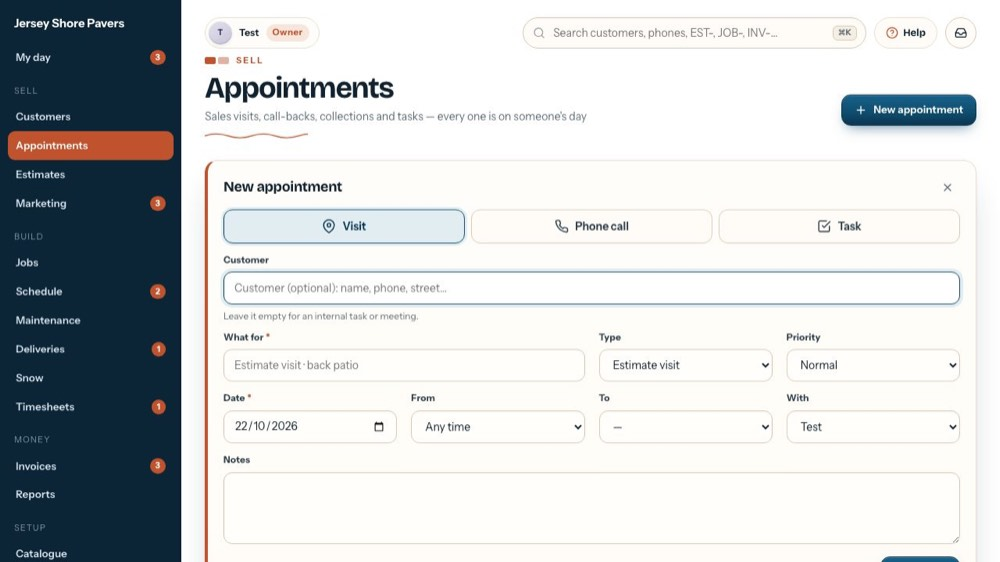
2What is it?
Start with what it is: a Visit, a Phone call or a Task. The form changes to fit.
-
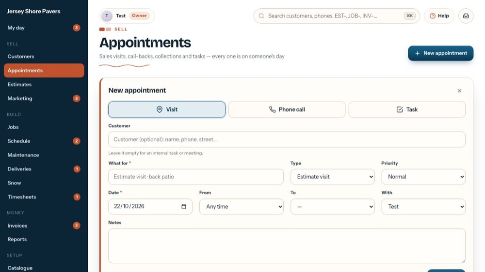
3Visit
A visit has a place and a time: estimate visits, site visits and service calls.
-
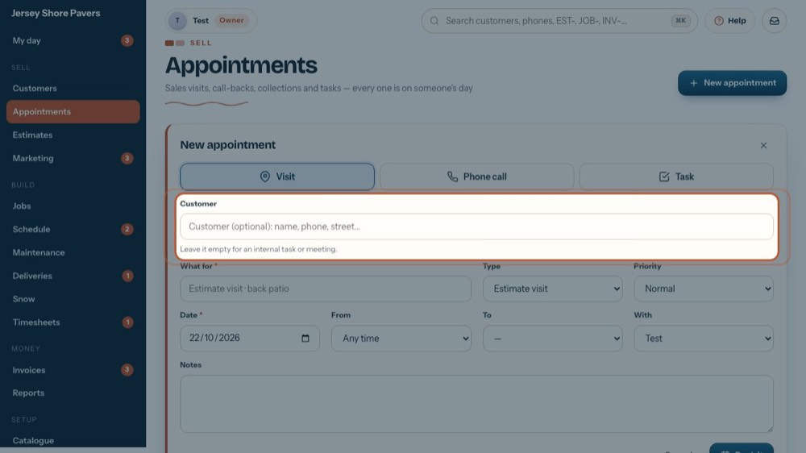
4The customer
Type a name, phone or street and pick them. Leave it empty for an internal task or meeting.
-
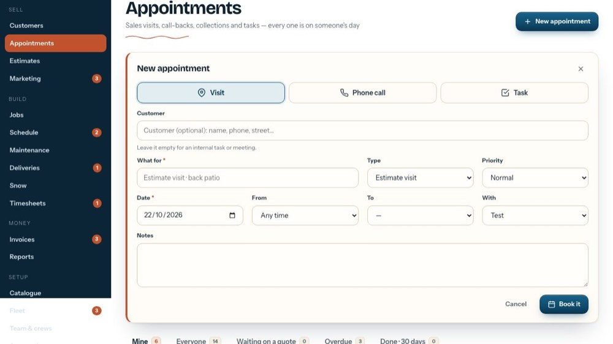
5What for
A short line everyone understands, like "Estimate visit · back patio". It's required.
-
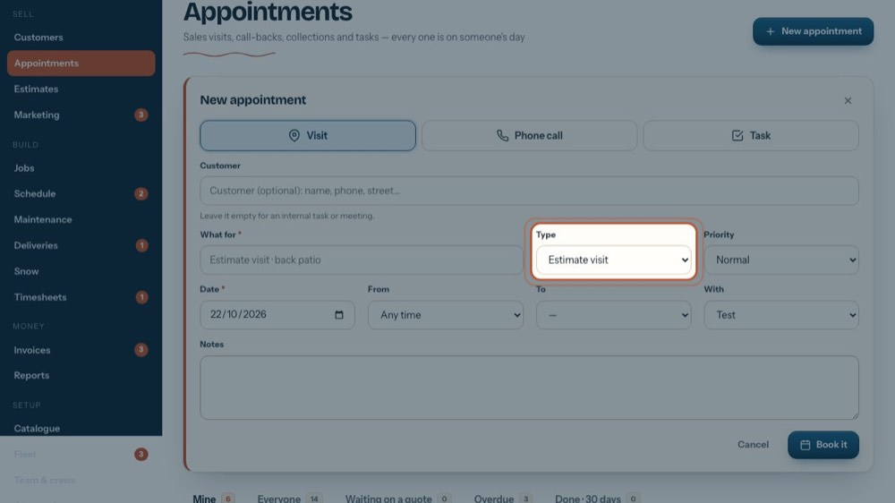
6Type
Estimate visit, Site visit or Service. After an estimate visit it can be marked Visit done · estimate pending.
-
 7
7Priority
Low, Normal, High or Urgent. High and Urgent show a red tag on the lists.
-
 8
8Date
The day it happens. It's also the due date, so it's on that person's day straight away.
-
 9
9From and To
Pick a start and the end follows an hour later, or leave it at Any time.
-
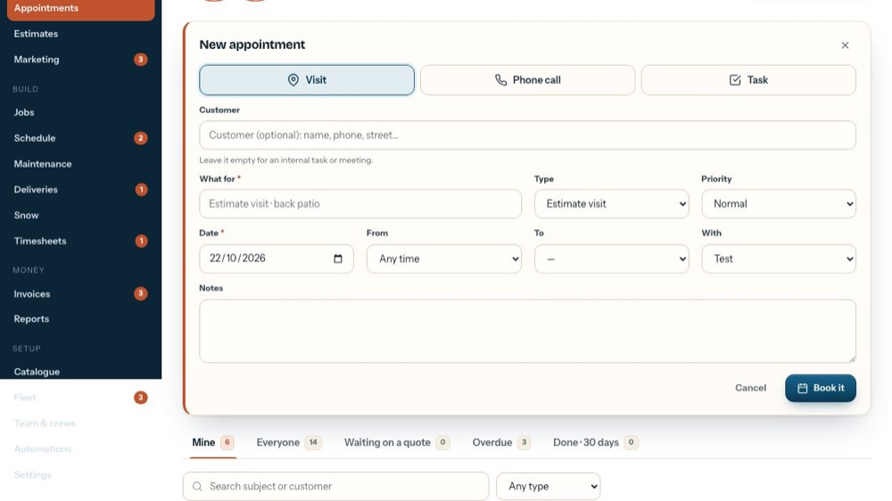
10With
Who goes. Only people who take appointments are listed (set on Team & crews).
-
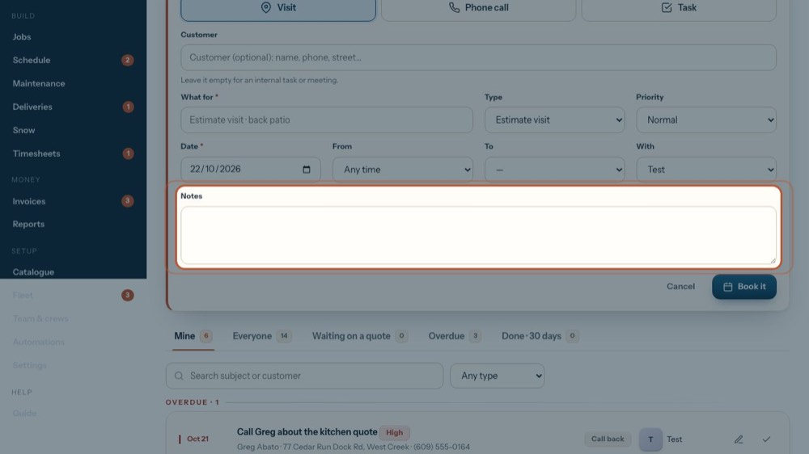
11Notes
Anything the person should know: a gate code, what the customer asked for.
-
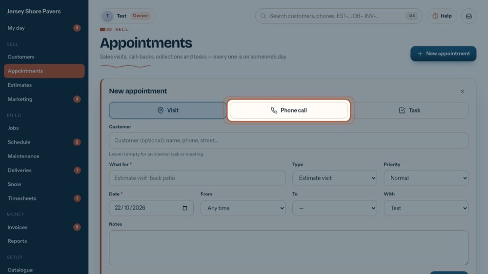
12Phone call
Now let's make it a phone call.
-
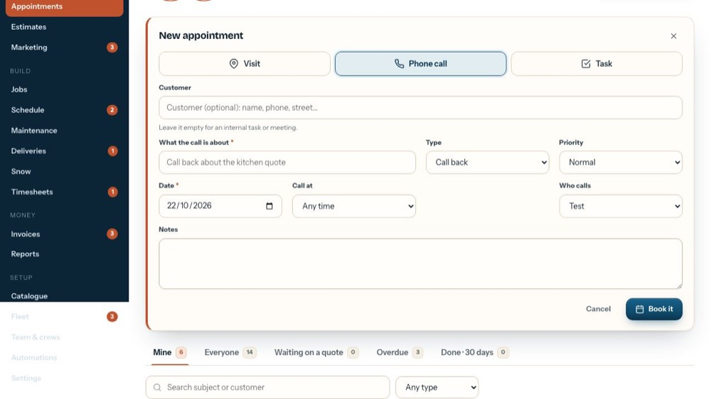
13Call at and who calls
A call has one time (15 minutes) and Who calls. Its type is Call back or Collection, and the call's subject goes in What the call is about.
-
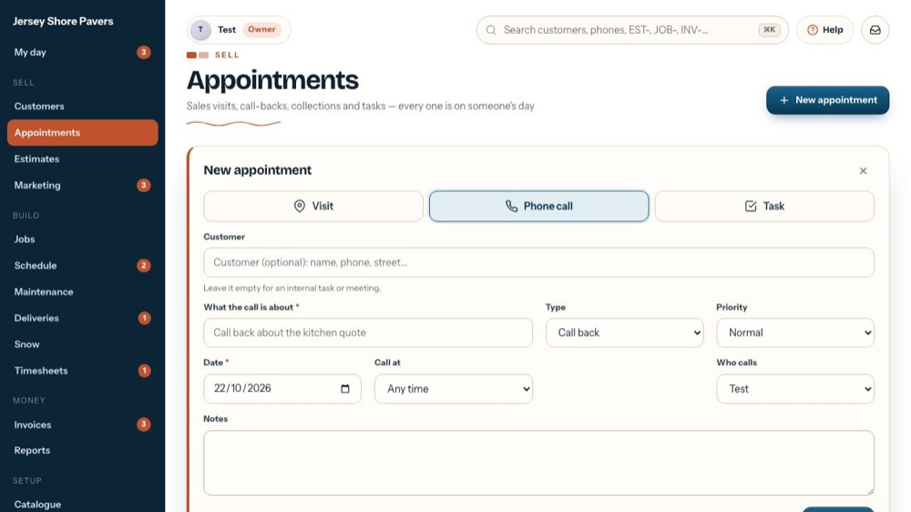
14Task
And a task: any to-do, an internal meeting, an order to place.
-
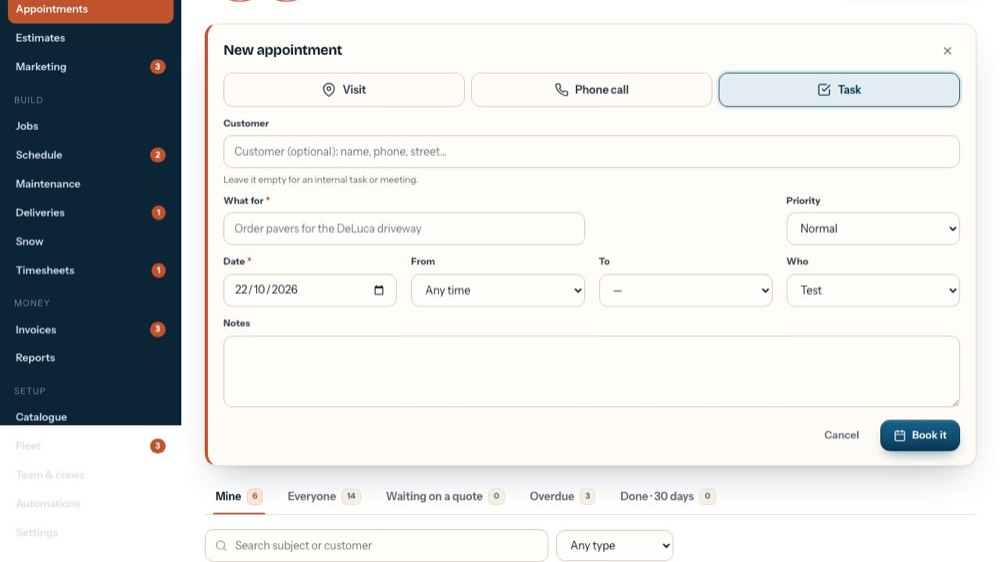
15Anyone, crews included
A task can go to anyone in the company. It shows on their My day and their phone until they mark it done.
-
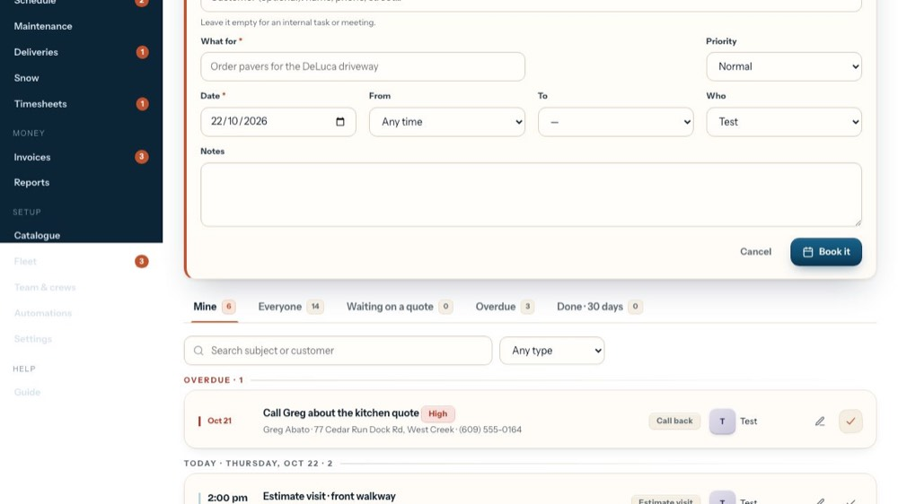
16Book it
Book it saves it onto that person's day; Cancel throws it away. The tour doesn't save anything.
-
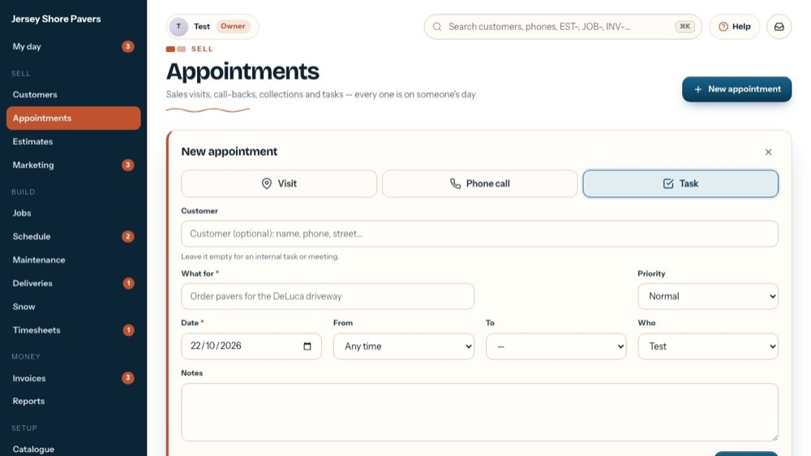
17Close it
The X closes the form without booking.